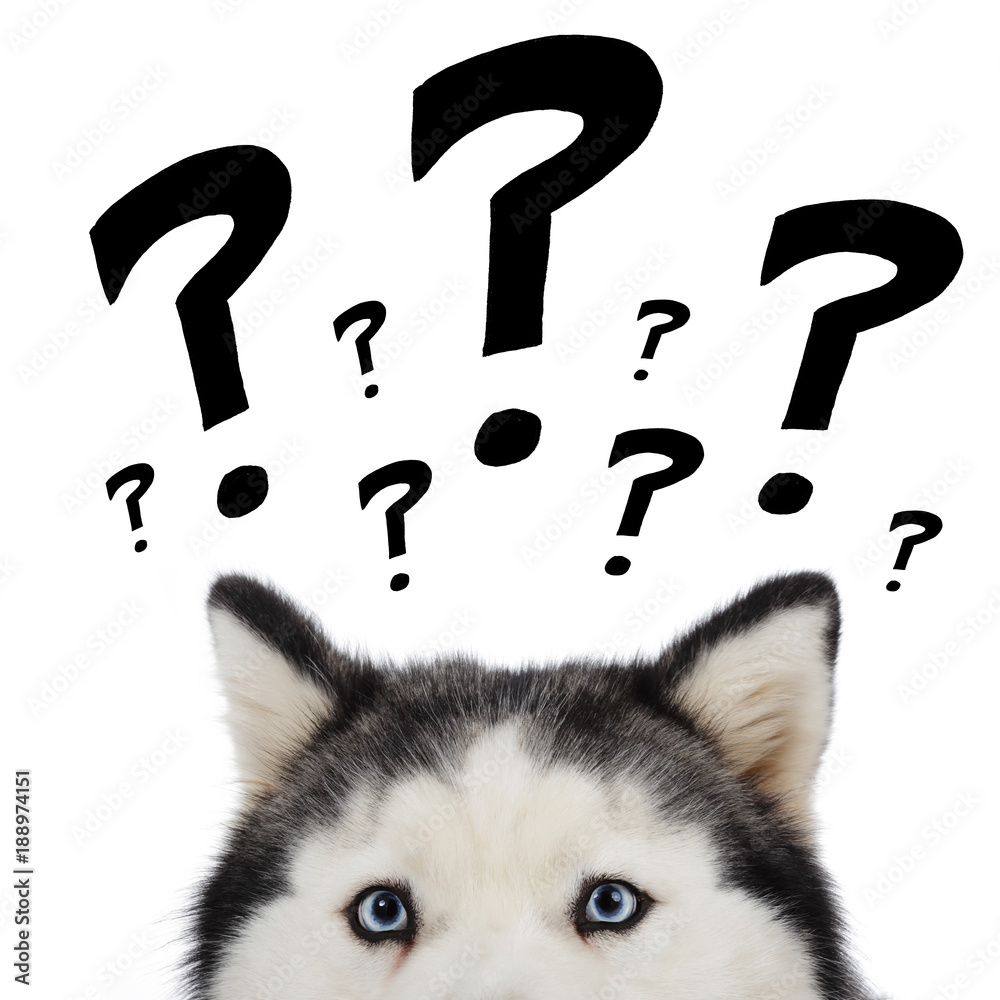

Bonjour et bienvenue aux amoureux des chiens !!
WARNING : ceci est un quizz ! Quittez si vous n'êtes pas assez fort !!

Répondez correctement à chaque question et découvrez-en plus sur nos amis canins préférés !!
Il y a 3 questions.
Bonne chance !
C'est parti !